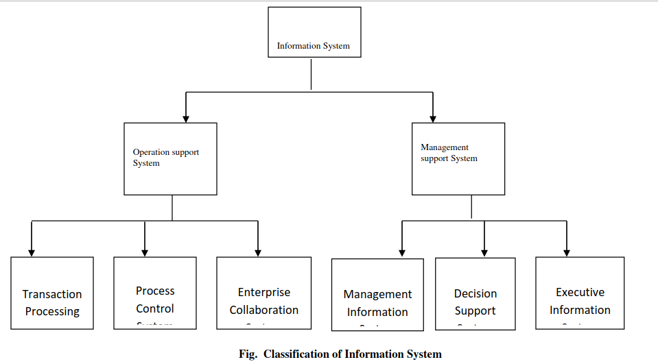

Module 1: Introduction to Systems Analysis and Design
🎯 Learning Objectives
- Define key terms related to data, information, and knowledge.
- Describe the components and resources of an information system.
- Identify different types of information systems and their roles.
- Understand the roles of stakeholders in information systems.
📚 Meaning of terms:
DATA AND INFORMATION
Data refers to a set of discrete objective facts about an event or a process. Data may be numerical quantities or other attributes derived from observation, experiment, or calculation. The term data is derived from the Latin word datum which means "that which is given" Data is often viewed as a lowest level of abstraction from which information and (or) knowledge is derived. Data has no significance beyond its existence. Data can be meaningful only when a human or a machine interprets its context.
Some of the characteristics of data are:
- Data represents unorganized and unprocessed facts
- Usually data is static in nature.
- It can represent a set of discrete facts about events.
- Data is a prerequisite to information.
Types of data
Data can be classified into different types. The following table 1.1 illustrates some of the commonly used types of data.
| Data | Represented by |
|---|---|
| Alphanumeric data | Numbers, letters, and other characters |
| Image data | Graphic images or pictures |
| Audio data | Sound, noise, tones |
| Video data | Moving images or pictures |
Information is a collection of facts organized in such a way that they have additional value beyond the value of the facts themselves. Information is data that has been interpreted or processed so that it has meaning for the user.
In simpler terms, data endowed with relevance and purpose is information.
For instance consider the following set of numbers 16.0, 17.0, 16.0, 18.5, 17.0,15.5, etc. What does the set convey?
A students of a deemed university may consider it as his/her Continuous Internal Evaluation marks. A doctor may treat it as thermometer reading of temperature a patient. A programmer may treat it as output or set of real numbers which are input of /to his/her program. A researcher
Fig 1.1 Process of converting data to information
The following table illustrates how the huge amount of data that manager may receive could be processed to create useful information.
| Data | Possible methods of converting data into information |
|---|---|
| Financial performance | Present complex data as a chart or graph |
| Sales figures | Plot charts and identify trends |
| Market and competition data | Find average or typical values |
| Production output | Monitor changes over time and forecast future values |
| Costs of resources or other inputs | Compare figures and identify similarities or differences |
Note:
Collecting data is an expensive process. To merit the effort, one needs to be very clear about why you need it. Proper planning must be done so that only required data is obtained for processing and usage. For organizations, the key reason behind collection of data is to monitor and improve performance. Some of the important guidelines for data collection include
- Collect data on the indicators that really do affect performance
- Collect data from reliable sources
- Collect data, which can be converted into information.
Characteristics of information
Information must posses the following characteristics for it to be useful and qualitative in nature. These include:
- Completeness
- Accuracy
- Timeliness
- Consistency
- Validity
- Appropriateness
- Relevance
- Usability
- Accessibility
Completeness - Information must be complete, else it leads to incorrect decision-making.
Accuracy - Accurate information is the best kind of information. Accurate information is one, which is reliable and from a correct source.
Timeliness - "Timely" means, "appearing at the right moment”. Information needs to be available when it's needed. Also, information needs to be up-to-date.
Consistency - The source of information should not change at different places, or contradicts itself. It is the sign that it is untrustworthy.
Validity - To be valuable, information should be unbiased, representative and verifiable. If information neglects key topics or issues, it might not represent the full knowledge base you need to know. If information cannot be independently verified, it should be treated with utmost caution.
Appropriateness - Information should be presented in a way that is meaningful, relevant and formatted to suit the user's needs
Relevance - The Information should be relevant to the user quires. Information is not universally relevant and valuable, it is valuable and relevant only to a person who needs it and can use it.
Usability - The information has to be presented to the users to understand and explore it during decision-making activities.
Accessibility - Up-to-date information should be accessible at any time to authorized or relevant users only.
Knowledge - Knowledge is a subset of information. It is a subset that has been extracted, filtered, or formatted in a very special way. More specifically, knowledge is information that has been subjected to and passed tests of validation. For instance, scientific knowledge is information i.e hypotheses and theories validated by the rules and tests applied to it by some scientific community. Organizational knowledge is information validated by the rules and tests of the organization seeking knowledge. The quality of the knowledge depends on the tendency of validation rules and tests to produce knowledge that improves organizational performance.
In simpler terms, knowledge is a combination of information, experience and insight that may benefit the individual or the organization.
Knowledge is based on information that is organized, synthesized, or summarized to enhance comprehension, awareness, or understanding. Knowledge represents a state or potential for action and decisions in a person, organization or a group. It could be changed in the process of learning, which causes changes in understanding, decision or action.
SYSTEM
A system is a set of inter-dependent/interrelated components (some of which may be systems in their own right), with an identifiable boundary and which collectively accomplish certain objectives/purpose.
INFORMATION TECHNOLOGY
Definition of ICT
- Information and Communications Technology (ICT), it is the study or business of developing and using technology to process information and aid communications.
- ICTs stand for information and communication technologies and are defined, for the purposes of this primer, as a —diverse set of technological tools and resources used to communicate, and to create, disseminate, store, and manage information.|| [4] These technologies include computers, the Internet, broadcasting technologies (radio and television), and telephony.
NOTE: Information technology is about generation and management of information but not communication of the information
Uses of ICT
- ICT is concerned with the storage, retrieval, manipulation, transmission or receipt of digital data.
- The data is transferred or communicated to people over long distances electronic means.
INFORMATION SYSTEM
Information systems can be defined in many ways. An Information System is an organized combination of people, hardware, software, and communication networks and data resources. The information systems are used to collect, transform and disseminate information in an organization for better management.
Alternatively, an information system can also be defined as a set of interrelated components that collect, process, store, and distribute information to support decision making, coordination, control, analysis, and visualization of various organizational activities.
Finally, we can also define an information system is a set of interrelated elements or components that collect (input), manipulate (process), and disseminate (output) data and information and provide a feedback mechanism to meet an objective.
Today most of the automated systems that we come across are information systems. For instance, ATM, card catalog in a library and cash register maintained in banks are all information systems.
Why information systems?
Today the business environment is changing due to the following factors
- Globalization
- Industrial economies
- Transformation of the enterprise
Globalization has paved a way for management & control in a global marketplace and also competition in world markets. Global work groups and global delivery systems are extensively used by most of the companies.
We can also notice that most of the recent business firms are focusing on knowledge and information based economies. This inturn has led to higher productivity in terms of new products & services. Thus knowledge is treated as one of the basic assets of the organization.
Thus, globalization and industrial economies have made industrial revolution by transforming the centralized business approach into a decentralized, more flexible and location independent approach. They have also empowered teamwork within the firms.
In order to survive and prosper in such a chaining environment, automation of day-to-day business activities is becoming crucial. As a solution deployment of Information systems are considered.
The fundamental roles of information system in business includes
- Support of most business processes and operations.
- Support of decision making by its employees and managers.
- Support of its strategies for competitive advantage.
Components/Resource of an information system
Information systems resources include,
- People resources
- Hardware resources
- Software resources
- Data resources
- Network resources
People resources:
The main aim of an information system is to provide information to its users. Users are the people who interact with an information system, both inside and outside the organization. There are two types of user namely end user and specialists.
Information system specialist includes users like system analysts, software developers and system operators. Other users other than the IS specialists are called end users.
The success or failure of a system usually depends on whether users are satisfied with the system's output and operations. To serve users, successful information systems depend on skilled professional, such a systems analysts, programmers, network administrators, and other IT staff members.
Hardware Resources
Hardware consists of everything in the physical layer of the information system. Hardware resources can be classified as into machine resources and media.
Machine resources include computers, video monitor, magnetic disk drives, printers and optical scanners. Media includes floppy disks, magnetic tape, optical disks, plastic cards and paper forms.
Software Resources
Software refers to the programs that control the hardware and produce the desired information or results. Software consists of system software and application software.
System software manages the hardware components, which can include a single workstation or a global network with many thousands of clients. Either the hardware manufacturer supplies the system software or a company purchases it from a vendor. Examples of system software include the operating system, security software that protects the computer from intrusion, device drivers that communicate with hardware such as printers, and utility programs that handle specific tasks such as data backup and disk management.
Application software consists of programs that support day-to-day business functions and provide users with the information they require. Application software can serve one user or thousands of users throughout the organization. Example of company-wide applications, called enterprise applications, includes order processing systems, payroll systems, and company communications network. On a smaller scale, individual users increase their productivity with tools such as spreadsheets, word processors, and database management systems.
Data Resources
Data is the raw material that an information system transforms into useful information. An information system can store data in various locations, called table. By linking the tables, the system can extract specific information. Consider a payroll system. At the end of a pay period,
Network Resources
Today most of the enterprises are internetworked enterprises i.e globally distinct parts of the organization are connected together through network. Thus network resources includes communication media, communication processors, network access and control software
Types of information systems
Information systems can be broadly classified into two categories namely, operation support system and management support system. The following figure 3.1 illustrates the classification of Information Systems.
Fig. Classification of Information System
Operation Support System
Operation support systems are that process data generated by and used in business operations. The main Objective of an operation support system is to efficiently process business transactions, control industrial processes, support enterprise communications and collaboration, and update corporate databases. Operation Support System includes other subsystems like transaction processing system, process control system and enterprise collaboration system.
Transaction processing systems process data resulting from business transactions, update operational databases, and produce business documents. Examples of transaction processing system include Sales and inventory system and processing and accounting systems.
Process control systems are used to monitor and control industrial process. Some of the process control systems are petroleum refining, power generation, steel producing systems.
Enterprise collaboration systems are used to support team, workgroup, and enterprise communications and collaboration. They in turn create virtual groups / teams. Some examples include email, chat, and video conferencing groupware systems.
Management support systems:
Management support systems focus on providing information and support for effective decision making by managers.
Management information systems provide information in the form of prespecified reports and displays to support business decision-making Transactions recorded in a TPS are analyzed and reported by an MIS. They have large quantities of input data and they produce summary reports as output. They are normally used by middle managers. Some of the examples of management information system are Sales analysis, production performance and cost trend reporting systems.
Decision support systems provide interactive ad hoc support for the decision making by providing information, models, or analysis tools. Often used by senior manager or high-level managers. Some of the decision support systems are product pricing, profitability forecasting, and risk analysis.
Executive Information System or Executive Support System provides top executives with information in interactive format. They provide both summary and detailed report for the top executives about the entire organization.
Roles of information systems stake holders
Roles for information system can be broadly classified into five groups; system owners, system users, system designer, system builders, and system analysts (Bentley et. al., 2007). Each of this group defines different roles plays in the system development and has a different perspective of the same information system. But, in some cases, one individual can play more than one role in same system development.
1. System Owners
System owners is an information system's sponsor and executive advocate, responsible for funding the project of developing, operating and maintaining the information system. Usually it comes from middle or executive managers. System owner interested to know about the cost of the system, the benefits of the system to the organization rather than the way how the system will be developed.
2. System Users
System users act as a person who will use the information system. System users use the IS to capture, validate, enter, respond to, and exchange data and information. The system build is in order to fulfill their needs. During the system development, discussion with system users is important to make sure that the business requirements level is similar with the technical requirements level.
3. System Designer
System designer is one of the experts in information system. System designer will translate the system users' business requirement into technical parts. They will design a database, input and output interfaces, networks, and others in order to meet the system users' requirements.
4. System Builders
System builder is also an expert in information system. System builder will construct the system based on design specification done by system designer.
5. System Analysts
System analyst is an important role in system development. System analyst's job is to determine which kind of system will best suit to the organizational problems or opportunity on which you are focusing. They will study the problems and the needs of an organization to determine how people, data, processes and information technology can best accomplish improvements for the business. System analyst focuses on the information system issues surrounding the system. They develop an ideas and suggestions on how the use of information system can improve the business process. A system analyst plans the projects, develops schedules and estimates costs. The role of system analyst is to ensure that the system conforms to information system standards.
6. Project Manager
Previously, we have discusses different roles that involved in system development; system owners, system users, system designer, system builders, and system analysts. These individuals should work in a team under project manager supervision. Project manager is an individual who responsible for planning, monitoring and controlling the projects with respect to schedule, budget, deliverables, customer satisfaction, technical standard and system quality. The project manager likes to know the cost of the system, what benefits the system can bring into the business process, but the process of system development. Project manager must manage a team of system owners, system users, system designer, system builders, and system analysts.